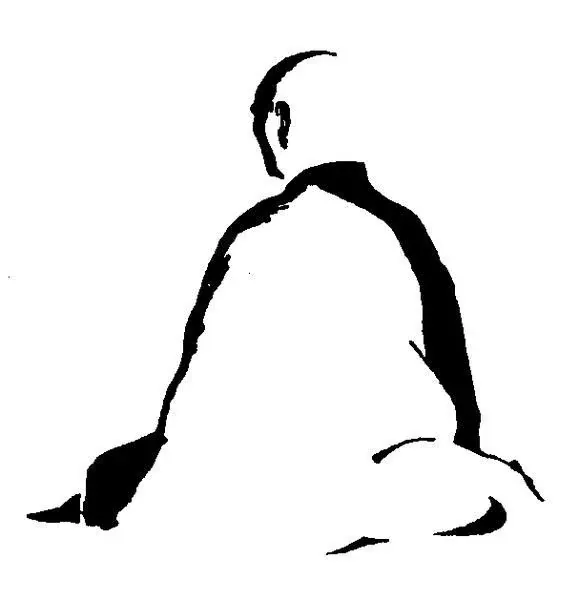

Written by a senior EmptyHands student who works in mental health.
Have you ever had one of those days? You’re running late, squeezing onto an overcrowded train, holding on to what little calm you have left as you finish your third coffee. That is what stress looks like, and it can show up as poor sleep, headaches or a short temper.
Why we need ways to cope
Stress is widespread, especially among young people. In a 2018 survey of 1,000 18 to 25-year-olds, the charity UK Youth found that they spent more than six hours a day feeling stressed or worried. We all need healthy ways to cope, and Karate can be one of them.
My journey
I started Karate at the age of ten, and over twelve years it has become a central part of my life. I joined the instructing programme early, which meant explaining techniques to students and answering their questions. That gave me a deeper understanding of Karate and its principles.
Today I work with people facing mental health difficulties, creating intervention plans and providing therapy. Many of the lessons I draw on come straight from the dojo.
Kumite: calm under pressure
Karate training rests on three foundations: kihon (basics), kata (forms) and kumite (sparring). Kumite builds timing and accuracy, but more importantly it teaches us to manage the fight-or-flight response.
Imagine looking up from this article to see someone standing in front of you with a knife. Your heart races and your brain scrambles to decide: run, freeze or fight? That is fight or flight, the body’s automatic response to danger.
Regular, controlled sparring gets us used to adrenaline and quick decisions, so the response becomes familiar rather than overwhelming. Over time it develops instinct and calm, which help in stressful moments far from the dojo.
Kata: moving meditation
Once a kata begins, you give it your full attention. Kata also trains the breath: some movements need a strong exhalation, others are slow and deliberate. This combination of focus, breathing and set movement makes kata a form of moving meditation.
When I first learned a kata and felt pleased with my performance, Sensei said: “Okay, now do it ten more times!” It frustrated me then, but I now see the value of that repetition. In daily life our senses are in overdrive, with one eye on the TV, one ear on the phone and our minds on tomorrow. Practising the same movements again and again gives the mind a rare chance to rest on one thing.
The importance of balance
After graduating, I found it hard to balance work and life, and I cut back on sleep and meals. Healthy habits such as sleep, regular meals and exercise are essential for a healthy mind.
A Shiatsu master once suggested I build small rituals to separate work from home, such as changing my clothes when I get in. A ritual like this marks the change from one activity to the next, so the mind is not scattered across everything at once.
Mokuso: the power of stillness
Every EmptyHands class begins with the same ritual: we light incense, ring a bell and meditate. This is mokuso, Japanese for meditation. The sounds and smells help us focus, and our busy minds slow down for a moment.
I once worked with a client who had severe anxiety and panic attacks and felt he had tried everything. My Karate experience told me how powerful simple meditation can be, so I included these steps in his plan:
- Space - find a quiet, comfortable room at a pleasant temperature, free from interruptions and not too dark or bright.
- Posture - sit comfortably, close your eyes, relax your shoulders and keep your back straight.
- Breathing - breathe deeply in through your nose and slowly out through your mouth, again and again.
- Focus - concentrate only on your breathing. When your mind wanders to an itch or what to have for dinner, gently bring it back to the breath. A calming scent, such as incense, can help.
- Feeling - notice the signs that stress is easing: muscles relaxing and thoughts becoming clearer.
It sounds simple, but ask yourself: when did you last sit quietly and think of nothing?
Calm that comes from training
On a counselling course, we practised being both therapist and client. When my partner began crying as she shared her story, my tutor noticed how calm I stayed. That calm did not come from nowhere. It came from years of kata, of meeting the unexpected in kumite, and of sitting in mokuso.
Gichin Funakoshi, the father of modern Karate, taught that Karate goes beyond the dojo and into everyday life. Its lessons can help us all to cope.
A challenge for today
Take five minutes today to try the exercise above. And if you would like to go further, find a dojo that values this kind of traditional training. Book a trial Karate class, or read about Karate mindsets.
If stress or anxiety is affecting your daily life, please talk to your GP, or contact NHS 111 or the Samaritans on 116 123.